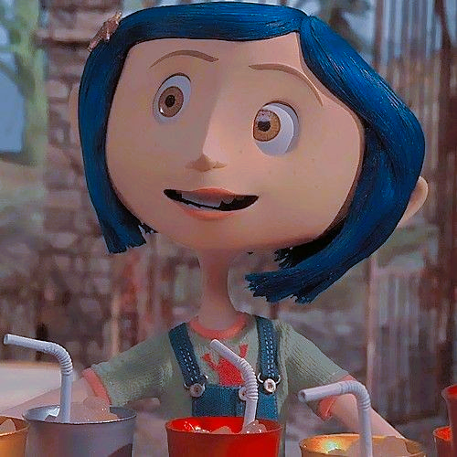

CORALINE

Coraline é um filme de animação stop-motion estadunidense de 2009, do gênero fantasia, escrito e dirigido por Henry
Selick e baseado no livro de mesmo nome do Neil Gaiman. Coraline Jones tem que se adaptar à vida nos apartamentos do
Palácio Rosa, uma antiga casa em Ashland, Oregon, depois de se mudar de Pontiac, Michigan. Seus pais que ficam em casa,
Charlie e Mel, têm que trabalhar e ignorá-la. Ela cruza com um gato preto e Wyborne, neto da senhoria, que lhe deixa um
sósia de boneca de pano. Ele leva Coraline a uma pequena porta com uma parede de tijolos atrás dela. Naquela noite, um
rato saltitante leva Coraline de volta à porta, agora um portal que leva ao Outro Mundo, um universo alternativo onde os
sósias de olhos de botão de seus pais a esbanjam de comida e atenção.
Wikipédia
Curiosidades sobre o filme Coraline:
Foi o primeiro filme a usar a tecnologia de impressão 3D para criar expressões faciais realistas em suas marionetes;
A equipe construiu mais de 10.000 miniaturas para o filme, incluindo móveis, comida e até insetos;
É a primeira animação em stop-motion a ser feita originalmente para o formato 3D;
Coraline também é, até seu lançamento, o mais longo filme de animação em stop-motion já feito.
Baseado no livro de Neil Gaiman, "Coraline";
Foi indicado para melhor animação no Oscar de 2010;
Foi o primeiro filme lançado pela Focus Features.